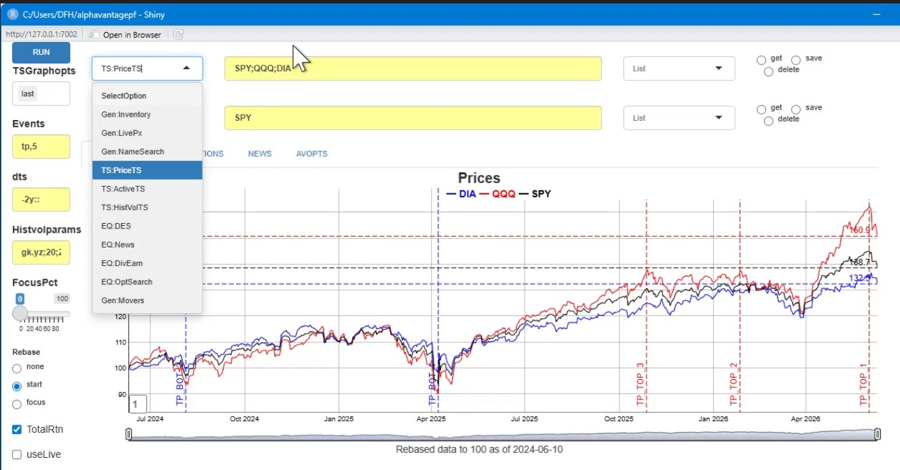

A data.table centric R and Shiny interface to the Alpha Vantage API, geared towards personal finance applications. Data is typically returned in “melted” or normalized forms and several helper functions are included to extract data from more complex API calls.
A Shiny interface is also provided to download, visualize and manage data for sets of assets, including ETFs and FX. While this is a rusty abacus relative to Bloomberg, it allows users to plot, summarize and compare sets of assets easily.
Installation
You can install the development version of alphavantagepf from Github, or the production version from CRAN. To
# install.packages("pak")
#pak::pak("derekholmes0/alphavantagepf")
install.packages("alphavantagepf")Load the package.
Functional API interface
Set your API key obtained from Alpha Vantage. If you have paid access, include an additional argument with your entitlement status, which is one of two strings “delayed” or “realtime”. “delayed” may be needed for some historical quotes.
av_api_key("YOUR_API_KEY")
print(av_api_key())
#> [1] "YOUR_API_KEY" NA
av_api_key("YOUR_API_KEY","delayed")
print(av_api_key())
#> [1] "YOUR_API_KEY" "delayed"Finding Functions and their defaults
To find parameters and defaults provided by the alphavantagepf package, use av_funhelp() and refer to the Alphavantage API calling conventions in Alphavantage API documentation
av_funhelp("SERIES_INTRADAY")
#> Function: TIME_SERIES_INTRADAY
#> Category: equity
#>
#> Parameters:
#> R> symbol
#> R> interval (default: 15min)
#> O> adjusted
#> O> extended_hours
#> O> month
#> O> outputsize (default: compact)
#> O> entitlement (default: {entitlement})
#> [1] "Function: TIME_SERIES_INTRADAY\nCategory: equity\n\nParameters:\nR> symbol\nR> interval (default: 15min)\nO> adjusted\nO> extended_hours\nO> month\nO> outputsize (default: compact)\nO> entitlement (default: {entitlement})\n"Required parameters are listed with “R” and optional parameters (and any default provided by this package) are listed with “O”
Getting Data from Alpha Vantage
Once the API key has been set, use the function av_get_pf() which requires at minimum two arguments, a symbol (put first to facilitate usage in pipes) and an Alphavantage “function” av_fun. Note that data is returned in a data.table, which can be cast as tibbles as necessary.
av_get_pf("IBM","TIME_SERIES_INTRADAY") |> head()
symbol timestamp open high low close volume
<char> <POSc> <num> <num> <num> <num> <int>
1: IBM 2026-01-02 11:00:00 292 293 291 292 141979
2: IBM 2026-01-02 11:15:00 293 293 292 292 117760The symbol parameter is required, but can be a simple empty string for functions that don’t require a symbol, e.g. TOP_GAINERS_LOSERS, or a list of symbols for bulk data, e.g. REALTIME_BULK_QUOTES. Symbols are attached if relevant, as in
av_get_pf(c("ORCL","Q","IBM","EWZ"),"REALTIME_BULK_QUOTES")
symbol timestamp open high low close volume previous_close change change_percent extended_hours_quote
<char> <POSc> <num> <num> <num> <num> <int> <num> <num> <num> <lgcl>
1: Q 2026-01-07 15:43:06 ...
2: EWZ 2026-01-07 15:43:08 ...
3: IBM 2026-01-07 15:43:08 ...
4: ORCL 2026-01-07 15:43:08 ...Using defaults and overrides
The alphavantagepf package includes a few default overrides to the defaults chosen in Alphavantage API documentation. Those defaults can be seen using the av_funhelp() function, or can be seen by calling av_get_pf() with verbose=TRUE. Any overrides to those parameters can be specified as additional arguments to av_get_pf(). For example, to get SMA using multiple horizon lengths can be seen below:
> av_get_pf("IBM","SMA",verbose=T,time_period=30)
https://www.alphavantage.co/query?function SMA
symbol IBM
interval daily
time_period 30 # << Normally 60
series_type close
datatype csv
> response: 200 type: application/x-download... url copied to clipboard
symbol time SMA
<char> <IDat> <num>
1: IBM 2026-01-06 304.1
2: IBM 2026-01-05 303.7More complex data and helpful data extractors.
Extracting embedded data.frames
Some API calls return more complex data, i.e. data with strings, numbers, and nested data.frames collected together. The av_get_pf() returns data in as natural a format as possible. For example, time series are not melted, but single name quotes are. The parameter to control this is melted with a default value of “melted”. melted can be set to TRUE (for example) to force or suppress melting into longer data.tables. As an example where the melted form makes more sense is the TOP_GAINERS_LOSERS function, which returns separate data.frames for each category. The natural output is
av_get_pf("","TOP_GAINERS_LOSERS")
Key: <variable>
symbol variable ltype value_df value_str value_num
<char> <char> <char> <list> <char> <num>
1: TOP_GAINERS_LOSERS last_updated numeric [NULL] 2026-01-05 16:15:59 US/Eastern 2026
2: TOP_GAINERS_LOSERS metadata character [NULL] Top gainers, losers, and most actively t NA
3: TOP_GAINERS_LOSERS most_actively_traded list <data.frame[20x5]> NULL NA
4: TOP_GAINERS_LOSERS top_gainers list <data.frame[20x5]> NULL NA
5: TOP_GAINERS_LOSERS top_losers list <data.frame[20x5]> NULL NA- Note that symbol for
TOP_GAINERS_LOSERSisn’t used, but still needs to be specified. - Note that the data returned is in long form, and always has at least three columns,
symbol(which cna be changed in av_get_pf() optional parameters).variablewhich is the name of the data item returned, and (e.g.)value_strorvalue_dfwith appropriate data components. The data is separated out by type so further delisting doesn’t have to be done after the call.
If you want to just get, e.g. the top losers, the returned data can be piped into the av_extract_df() function
av_extract_df() function:
av_get_pf("","TOP_GAINERS_LOSERS") |> av_extract_df("top_losers")
<char> <num> <num> <char> <num> <char>
1: OCG 0.0378 -0.0654 -63.3721% 216078762 TOP_GAINERS_LOSERS
2: ZBIO 16.6100 -17.8900 -51.8551% 8034469 TOP_GAINERS_LOSERS
3: SGN 0.4627 -0.4873 -51.2947% 2115079 TOP_GAINERS_LOSERS
4: HYT^# 0.0186 -0.0164 -46.8571% 126059 TOP_GAINERS_LOSERS
5: LVROW 0.0122 -0.0079 -39.3035% 10967 TOP_GAINERS_LOSERSForeign exchange
The returned data from the CURRENCY_EXCHANGE_RATE is a bit complex, and can be simplified with
Options
The HISTORICAL_OPTIONS function returns a large set of options for any given ticker, many of which are long dated or have no opent interest. The av_grep_opts() helper can be used to narrow those down using a comma-separated string specifying
- How far out maturities should be returned, e.g. Front Month (F) or Back month (B) or all (A)
- What expiration schedules should be used, e.g. (Q) for Quarterly or (M) for monthlies.
- “Call”, “Put” or “all”
So, for example, to get the closest monthly puts with at least 2 days to maturity, use the string “F,M,put”. The default is “F,M,call” and (partial) results are shown below:
av_get_pf("IBM","HISTORICAL_OPTIONS") |> av_grep_opts("F,M,put",mindays=2)
symbol contractID expiration strike type last mark bid bid_size ask ask_size volume open_interest ...
<char> <char> <IDat> <num> <char> <num> <num> <num> <int> <num> <int> <int> ...
1: IBM IBM260116P00277500 2026-01-16 278 put 0.00 0.80 0.67 158 0.94 254 0 ...
2: IBM IBM260116P00280000 2026-01-16 280 put 0.98 0.96 0.90 180 1.02 10 111 ...
3: IBM IBM260116P00282500 2026-01-16 282 put 1.32 1.29 1.17 213 1.41 158 14 ...Analytics requests
Analytics requests using the Alphavantage function ANALYTICS_FIXED_WINDOW are complicated enough that they are returned in raw form, which includes meta-data. These can be untangled using the extracting function av_extract_analytics.
av_get_pf(c("ORCL","IBM"),"ANALYTICS_FIXED_WINDOW") |> av_extract_analytics(separate_vars=TRUE)
av_get_pf: Reurning raw output; send to appropriate helper ----------------------------
variable_1 variable_2 variable_3 value
<char> <char> <char> <char>
1: symbols <NA> <NA> ORCL,IBM
2: min_dt <NA> <NA> 2025-12-09
3: max_dt <NA> <NA> 2026-01-06
4: ohlc <NA> <NA> Close
5: interval <NA> <NA> DAILY
6: RETURNS_CALCULATIONS CUMULATIVE_RETURN ORCL -0.12540062294046
7: RETURNS_CALCULATIONS CUMULATIVE_RETURN IBM -0.0257987632053596
8: RETURNS_CALCULATIONS STDDEV(ANNUALIZED=TRUE) ORCL 0.575380551599422
9: RETURNS_CALCULATIONS STDDEV(ANNUALIZED=TRUE) IBM 0.171846694713282Important Notes: av_get_pf()
- Three parameters
apikey,datatypeandoutputsizeare filled into the API call from the package.outputsizedefaults to the full dataset, and can be overridden as a named parameter to theav_get_pf()call. - An additional parameter
entitlementis added to the url if specified in theav_api_key()call and relevant. -
symbolis always returned in the output dataset, and defaults to the name of theav_funcall if no symbol is relevant. - There is no need to specify the
datatypeparameter as an argument to av_get_pf(). The function will return a data.table - Some output above has been truncated to adhere to licensing rules.
Shiny interface
A Shiny interface is included in the package to manage and visualize data. To launch the app, use av_runShiny(), and start with the first step of setting your API key. (See Vignette for other items you can set) Once the API key is set, type in a set of symbols you ae interested in (separated by semicolons) and select an analysis to make. For example, to show a normalized total return chart for 3 common ETS, select “start” to rebase at the start of the requested period ("-2y::"in datestring) select TS:PriceTS to get a time series graph, and press RUN. The result will be as below.

When TS:PriceTS is run, av_runShiny() will
- Call av_get_pf() with parameters appropriate to the asset (e.g.
TIME_SERIES_DAILYfor stocks,FX_DAILYfor FX), - Save the data in an internal data store, or update existing data as necessary, and
- Plot an interactive graph using the fgts_dygraph() function.
A few key features of the app include:
- The app will download any data needed that is not already cached. The function
av_add_data()can be used to add price data from other sources. - If at any point the user wants to make sure the last observation is live, check
useLivein the app. - Groups of assets can be saved as “asset lists” and save or recalled by name. To do so, type in your list name in the box to the right of the yellow asset line, and click save.
To recall the items in a list, select the name from the dropdown and click get. The assets in that list will then be pasted into the relevant line. - Each individual call to
av_get_pf()can be cached to a directory of the users’ choice. Data is saved in a named (by Alphavantage function) list of data.tables, and can be keyed (and upserted) or appended to a saved.Rdfile. See Vignette.
Other Analyses that are currently implemented include:
| Analysis | Description |
|---|---|
| Inventory | Shows the current inventory of price data and current asset lists |
| NameSearch | Search for asset names matching a string |
| LivePx | Get live prices for all assets |
| PriceTS | Plot asset prices (actual or normalized relative to a referernce date) |
| Note that two stacked independent plots are possible | |
| ActiveTS | Plot asset prices relative to first asset in lower yellow bar |
| HistVolTS | Plot historical volatility and correlation of asset prices |
| DES | Descriptive data |
| News | News headlines and links for the assets specified |
| DivEarn | Dividends and earnings data for the assets specified |
| OptSearch | Search for options matching a string, e.g. “F,M,put” for front month monthly puts |
| Movers | US Movers taken from TOP_GAINERS_LOSERS
|
Future plans include the ability to plug in bespoke analyses and tick data manipulation.